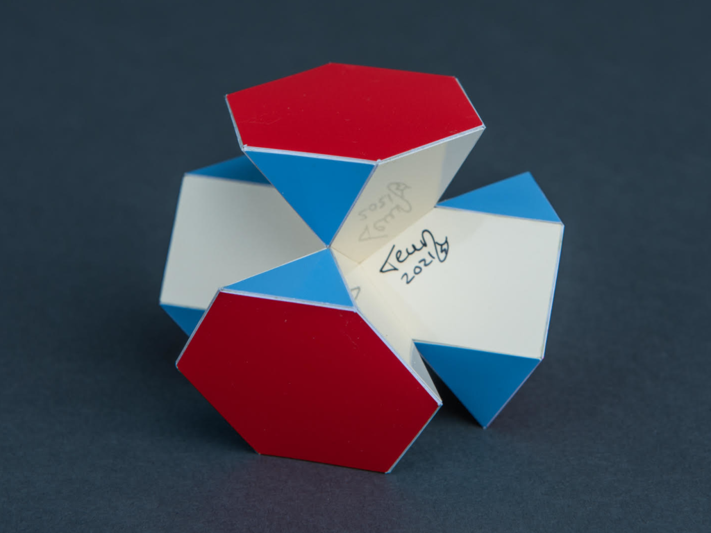
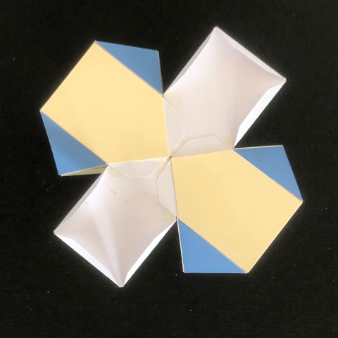

Deflated Swissohedron

This is a variant of the Swissohedron where the crosses are moved towards each other so that two opposite crosses meet. Then only half of the other faces are used and these are organised in a tetrahedral fashion. See more about corossohedra here.
The model was built in 2021 and the smallest edge length is 2.5 cm (1 inch). The height of the model is 6 cm (~2.4 inch).
This crossohedron is closely related to Steward's 4Q3(S3) used in Chapter VI of [BStew01] It is a bit hard to recognise the crosses in this one since one pair of the legs can be seen from one direction, while the other pair is only seen from the opposite direction. In the picture below a half-finished version of this model is shown. Here you can recognise one cross.

The picture below shows the complete series of Swissohedra from totally deflated to inflated with crosses of the same size.

Copyright of pictures by PhotoArt Studio Hörby
Links
Last Updated
2021-05-02
References
[BStew01] Steward, B. M: Adventures among the Toroids, Malloy Lithographing, Inc.; 2nd edition 1964
Interactive 3D model